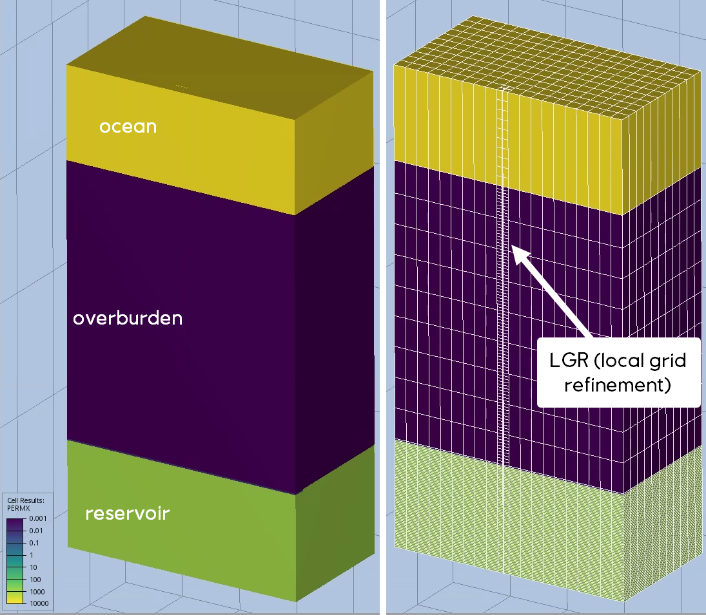
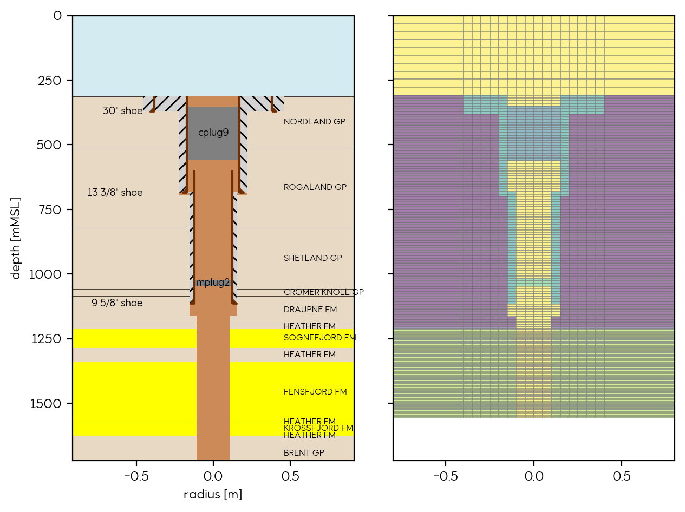

Detailed Simulation workflow
To set up a CIRRUS (PFLOTRAN-OGS) simulation run, users must first complete the pre-processing and preliminary assessment phase, which involves creating Well and Pressure instances. These instances provide the necessary wellbore and pressure data for the simulation. Additionally, users need to have template CIRRUS input files that outline the simulation setup (TEMP-0.in) and the grid (TEMP_GRD.grdecl). These templates describe a basic "shoebox" model with a layer cake grid representing the vertical space from mean sea level to the reservoir, including the ocean water column and overburden rocks.
The resulting simulation model is a 3D representation of the wellbore, with the well represented in a logically refined grid (LGR) at the center of the model. The zonation and assignment of transport properties in the model reflect the discrete sections of the well (cement bond, cement plugs, open hole). Casings are not discretely represented as grid cells but are modeled using transmissibility multipliers, which are set to zero by default to act as perfect barriers. The transport properties of the cement materials are assigned during the Well instance creation, while the properties of the reservoir and overburden rocks need to be manually set.

Figure 1: Comparison of the template grid with updated overburden thickness (left) and the resulting grid after LGR generation (right).Users should start with the canonical GaP and WellClass notebooks, especially notebooks/02_gap_grid.ipynb and notebooks/03_wellclass_to_gap.ipynb. Simulator-dependent experiments require copies of the template files and explicit external-tool setup; see experiments/README.md for the optional command-line utilities.
For a repeatable command-line workflow, a multi-sheet workbook can be used as the input deck. Its physical well sheets are converted to canonical WellClass JSON, while GridPolicy and DesignMatrix are parsed as separate GaP/CIRRUS simulation inputs used to parameterize the deck. Legacy SubsurfaceAssumptions sheets remain supported:
XLSX -> well_input.json -> parameterized <case_stem>.in
-> CIRRUS initialization -> .EGRID + .INIT
-> WellProcessed -> WellDataFrame -> LGRBuilder
-> <case_stem>_LGR.grdecl -> final CIRRUS simulationWorkbook-driven runs name generated files by a case stem, <well>_<case_name>, derived from the workbook Metadata name and the selected DesignMatrix case (for example wildcat_baseline). The rules and the batch layout are described in the multi-scenario section of the installation guide. TEMP-* names are reserved for the canonical template assets.
Create a starter workbook and stage a case:
python runscripts/create_well_input_workbook.py --output well_input.xlsx
python runscripts/prepare_init_case_from_xlsx.py \
--xlsx well_input.xlsx \
--output-root case \
--write-well-json \
--sim-command "runcirrus -i -nm 6 {deck}"Ready-to-edit examples are provided beside the canonical fixtures:
test_data/examples/wildcat/wildcat_workbook.xlsxtest_data/examples/smeaheia/smeaheia_workbook.xlsx
Their well-construction sheets are copied from the corresponding canonical JSON files. GridPolicy and DesignMatrix contain illustrative scenario values that must be reviewed before running CIRRUS. Regenerate both examples after changing their source fixtures with:
python runscripts/create_example_well_workbooks.pyGridPolicy lengths use metres in the model vertical-depth coordinate; dx and
dy are metres, and permeability uses mD. New workbooks state
depth_unit=m and permeability_unit=mD; legacy workbooks default to those
units. Required fields are top_depth and target_dz_water,
target_dz_overburden, and target_dz_reservoir. Defaults: reservoir_thickness
400 m; cells_per_layer 400; minimum layer counts 1; maximum layer counts
unset; nx/ny 20; dx/dy 200 m; reservoir_permx 1000 mD;
overburden_permx 0.001 mD; aquifer_permx unset; aquifer_layers 3;
free_fluid_permx 10000 mD; free_fluid_poro 1.0;
porv_multiplier 2000 (the default of the next two);
water_overburden_wall_porv_multiplier and reservoir_bottom_porv_multiplier
(both default to porv_multiplier); reservoir_wall_porv_multiplier 1;
permz_multiplier 0.1. Spacing and layer counts must
be positive, permeabilities nonnegative, and maximum layer counts cannot be
below their minimums. water_depth comes from Header.ground_elevation
(converted from ft when declared); legacy GridPolicy values for water depth,
reservoir top, and bottom depth are ignored because those boundaries are
derived from the header and well stratigraphy.
Scenario depths (z_fluid_contact, z_resrv, and
overburden_datum_depth) are TVDMSL metres; scenario pressures are bar. New
workbooks include depth_unit=m and pressure_unit=bar; legacy scenario rows
default to these units. The WellClass-to-GaP adapter expects processed interval
depths in TVDMSL metres and all open-hole, casing-cement, and barrier
permeabilities in mD. Unsupported units, missing required permeabilities, and
negative or non-finite permeability values fail before LGR generation.
Workbook pressure inputs are resolved by WellClass PressureScenario before
staging either CIRRUS run:
z_fluid_contactalone uses the WellClass hydrostatic pressure at that depth. The resolvedz_resrv/p_resrvpair is the same contact pair.z_fluid_contactwithp_fluid_contactanchors the curve at the contact; absent reservoir inputs resolve to that same pair.- A complete
z_resrv/p_resrvpair anchors the variable-density CO2 curve. Ifz_fluid_contactis supplied, its pressure is derived from that curve; otherwise the contact is placed atz_resrv. The reservoir datum must be shallower than or equal to the contact. - Partial reservoir pairs, a contact pressure without contact depth, and missing depth inputs are errors. If both pressure pairs are explicit, their contact pressures must agree within 0.01 bar (allowing rounding), otherwise generation fails rather than silently choosing one.
The generated CO2 equilibration block uses the resolved contact depth for
DATUM_D and WGC_D, and the resolved contact pressure for PRESSURE. The QC
plot uses that same resolved pair. scenario.json retains the workbook inputs
and adds resolved_pressure containing all four resolved depth/pressure values.
Depth-only pressure is the existing WellClass constant-reference-density brine
approximation; reservoir-to-contact integration uses the existing CO2 PVT model.
Previously, a blank p_fluid_contact copied p_resrv directly to the contact
depth without accounting for the distinct reservoir depth. Existing generated
cases are not modified. Regenerate such cases into a new output directory;
older workbooks with inconsistent explicit pairs now fail and must be corrected.
Example workbooks keep their contact and reservoir pairs identical to preserve
their previous CIRRUS pressure datums.
Scenario salinity is the NaCl mass fraction of the solution (kg salt / kg
solution), default 0.032; new workbooks declare salinity_basis=mass_fraction
and legacy values are interpreted the same way. The PVT model uses this
fraction for the Laliberté brine-density correction. PressureTable evaluates
the corresponding reference density at ground temperature and 1.01325 bar, then
uses its existing constant-density hydrostatic approximation. Generated CIRRUS
SALT_TABLE blocks use CONCENTRATION_UNITS MASS and the same mass fraction at
both ends of the generated SALTVD interval. The global BRINE <salinity> MASS
uses that same value for CIRRUS surface-volume conversion and well/aquifer
calculations. Templates must contain exactly one active global BRINE line
(BRIN is also accepted). This keeps pressure and deck inputs consistent; it
does not yet support a depth-varying salinity profile.
Previously, generated decks retained the template's BRINE 0.032 MOLE even
when their salt tables used mass fractions. Newly generated initialization
and final decks correct this mismatch; existing decks and results are not
modified. Compare corrected runs in a separate output directory, especially
when interpreting water surface volumes. The simulator-level effect still
requires paired validation on a CIRRUS host.
Each DesignMatrix row is one case sharing the same physical well. Optional
columns override the corresponding GridPolicy values (the full list is in
Parameters you can sensitise per case). cb_perm and barrier_perm override casing-cement and
plug permeability. Their companion cb_perm_interval and
barrier_perm_interval columns select the interval by its name in the
HoleCasings or Plugs sheet; the default ALL applies the value to every
interval of that type. For a named interval, only that interval changes. Other
intervals retain their own workbook permeability, falling back to the CLI
default when none is provided. Interval names used as targets must be unique
within the relevant sheet and must match exactly. A target other than ALL
requires its corresponding permeability value. Cells that hold only free fluid
(the ocean layers, open hole and pipe interior) use one definition from
GridPolicy: free_fluid_permx (mD) and free_fluid_poro. These are physical
constants of the model, so leave the defaults alone unless you are running a
sensitivity: a DesignMatrix row can override them for one case, and the
effective values are saved in grid_policy.json. --oh-perm and hc_perm on open-hole rows are
deprecated: they still work when they equal the free-fluid permeability and are
an error when they differ. hc_perm on casing-cement rows is unchanged. Before
this definition, the open hole and pipe used porosity 0.99 and the ocean 1.0; all
now use 1.0, so regenerated wellbore cells differ slightly from older cases.
Effective values and targeted overrides are recorded in scenario.json, and
the resolved grid policy is saved in grid_policy.json.
Parameters you can sensitise per case
Each name below is a DesignMatrix column. A column does not have to exist in
your workbook: leave it out, or leave a cell blank, and the case uses the value
from GridPolicy, the well sheets or the built-in default. To vary a parameter,
add its column and fill it for the rows that differ. Precedence: DesignMatrix
row, then GridPolicy or the well sheets, then the built-in default. The
effective values are saved in each case's scenario.json and grid_policy.json.
Check scenario.json after the first run: a misspelled column name is ignored
without a warning.
| Column | Unit | If blank | What it changes |
|---|---|---|---|
case_name |
text | default |
Names the case; must be unique. Becomes the case folder and file stem. |
temperature_gradient |
degC/km | 31 | Temperature increase with depth, for fluid properties and the CIRRUS temperature table. |
ground_temperature |
degC | 4 | Temperature at the ground or seafloor. |
salinity |
kg/kg (NaCl mass fraction) | 0.032 | Brine density in the pressure profile, the CIRRUS salt tables and the global BRINE. |
fluid_type |
text | co2 |
Only co2 is available. |
z_fluid_contact, p_fluid_contact |
m TVDMSL, bar | z_resrv / p_resrv, else 1500 m / 144.5 bar |
Fluid-contact depth and pressure: the CIRRUS gas-water datum and contact. Each value falls back on its own, so give both values of one pair. |
z_resrv, p_resrv |
m TVDMSL, bar | none | Reservoir reference depth and pressure, used only where the matching fluid-contact value is blank. |
overburden_datum_depth |
m TVDMSL | midpoint of seafloor and reservoir top | Depth where the overburden pressure is specified; must lie between the water depth and the reservoir top. |
reservoir_permx |
mD | GridPolicy (1000) |
Reservoir horizontal permeability. |
overburden_permx |
mD | GridPolicy (0.001) |
Overburden horizontal permeability. |
free_fluid_permx |
mD | GridPolicy (10000) |
Permeability of the ocean layers, open hole and pipe interior. |
free_fluid_poro |
fraction | GridPolicy (1.0) |
Porosity of the same free-fluid cells. |
water_overburden_wall_porv_multiplier |
factor | GridPolicy, else porv_multiplier (2000) |
Pore volume of the four outer side walls of the water and overburden layers. |
reservoir_bottom_porv_multiplier |
factor | GridPolicy, else porv_multiplier (2000) |
Pore volume of the bottom reservoir layer (the bottom aquifer), except the grid centre cell, where the well and its LGR are built. |
reservoir_wall_porv_multiplier |
factor | GridPolicy (1, no effect) |
Pore volume of the four outer reservoir walls above the bottom layer. |
cb_perm |
mD | cement row hc_perm, else 0.05 |
Casing-cement permeability. |
cb_perm_interval |
text | ALL |
Which HoleCasings casing-cement name cb_perm applies to, or ALL. |
barrier_perm |
mD | Plugs cement_perm, else 0.05 |
Plug permeability. |
barrier_perm_interval |
text | ALL |
Which Plugs name barrier_perm applies to, or ALL. |
casing_hole_casing, casing_hole_depth_mTVDMSL, casing_hole_diameter_m |
name, m TVDMSL, m | none | The localized casing hole; all three or none. See the experimental hole. |
casing_hole_open |
TRUE/FALSE | TRUE | FALSE keeps the hole sealed but still reports FIPHOL, for a control case. |
depth_unit, pressure_unit, permeability_unit, salinity_basis |
m, bar, mD, mass fraction | as listed | Fixed; stating them documents the workbook but they cannot be varied. |
Preview a case without running CIRRUS. Staging writes the deck and the coarse
grid file and stops when no --sim-command is given. The grid file shows the
FIPLEG and PORV boxes, with the case's DesignMatrix overrides applied:
python runscripts/prepare_init_case_from_xlsx.py --xlsx wb.xlsx --case-name <case> --output-root preview/<case>
grep -E '^(FIPLEG|PORV)' preview/<case>/include/*_GRD.grdeclNot per case: set once in GridPolicy. These apply to the whole workbook. To
vary them, use separate workbooks and output roots.
- Grid geometry (a different grid, so results are not comparable cell by cell;
compare_scenario_outputs.py reports it as a grid study): top_depth,
target_dz_water, target_dz_overburden, target_dz_reservoir,
reservoir_thickness, cells_per_layer, min_water_layers,
min_overburden_layers, min_reservoir_layers, max_water_layers,
max_overburden_layers, max_reservoir_layers, nx, ny, dx, dy and
aquifer_layers. water_depth is derived from Header.ground_elevation.
- Physics (same grid): aquifer_permx, permz_multiplier, and
porv_multiplier, which only supplies the default of the two large pore volume
multipliers.
Command-line options apply to the whole batch: --simulation-years,
--start-date, --lgr-name, --cb-perm and --barrier-perm (the fallbacks in
the table), --ali-way and --template-root.
Adding cases to a batch that has already run
Run
run_workbook_scenarios_batch.py again on the edited workbook and the same
--output-root. Each workbook case is compared with the case folders there, and
only cases without a folder are run. No scheduler is needed:
| State | Evidence | Action |
|---|---|---|
| new | no case folder | run |
| finished | model/<stem>.LOG ends with Run completed |
skip |
| unverified | folder exists, but the log is missing or has no Run completed line |
not run; listed for you to check |
An unverified case may still be running, or may have been killed or crashed.
Check it, then delete its folder to rerun it. --dry-run prints this plan and
stops. If a finished case's DesignMatrix values differ from its saved
scenario.json, the plan warns; delete its folder to rerun. Changes to
GridPolicy or the well sheets are not detected. --force still reruns every
case and overwrites its output. batch_manifest.json marks skipped cases
existing or unverified.
Experimental localized casing hole
One optional hole per DesignMatrix row is supported. Supply all three fields
or leave all three blank:
| Field | Meaning |
|---|---|
casing_hole_casing |
Exact unique HoleCasings.name with type=casing, not casing cement |
casing_hole_depth_mTVDMSL |
Hole depth in metres TVDMSL |
casing_hole_diameter_m |
Finite positive circular opening diameter in metres |
casing_hole_open |
Optional; FALSE keeps the location sealed (default TRUE opens it) |
For example: Casing 20 in, 200, 0.1 in the Wildcat example. Depth intervals
are top-inclusive and bottom-exclusive, both for the casing and refined layer.
Every hole location also writes a FIPHOL partition inside the LGR, before
ENDFIN: region 1 is the cell inside each opening face, 2 the cell across it
(i + 1), and 3 the rest of the LGR. For a sealed control, repeat the hole
columns of the open row and set casing_hole_open to FALSE: the LGR gets the
same FIPHOL cells but no opening. Standalone: --casing-hole-report-only.
The resolved cells are in scenario.json (resolved_casing_hole, with
opened). Rows without a hole location are unchanged.
Unknown or duplicate casing names, incomplete inputs, and depths outside the casing fail before CIRRUS initialization. Geometry-dependent checks run after initialization, before writing the LGR.
Without measured XY/azimuth, placement is fixed at the +X side midpoint,
with a centered Y span equal to the hole diameter. The resolver uses absolute EGRID layer corners
(including the grid's depth origin), the final sealed casing bounds, and the
rounded CARFIN HYFIN ratios. It allocates pi * (diameter / 2)^2 to lateral
faces with area DY * DZ, weighted by each face's overlap with the diameter
span: allocated_area = circular_area * overlap / diameter. It writes
MULTX = allocated_area / face_area after the ordinary seals. Every face with
positive overlap participates, even if one tall, narrow face could hold the
whole area. A midpoint on a cell boundary shares the opening between both
cells; output faces are ordered by increasing J.
Span endpoints coincident with cell edges are snapped within a
double-precision cumulative-coordinate roundoff bound, preventing spurious
near-zero openings on neighboring faces. Diameters below that coordinate
resolution are rejected explicitly.
All faces remain at the same K, without refining or changing geometry. Multipliers stay
within [0, 1]; allocated area is conserved to relative tolerance 1e-12.
Reject a diameter extending beyond the casing side, an opening larger than
the available side area, or an overlap-weighted allocation exceeding any
face's area. Do not clip, reallocate outside the span, or spread in Z.
Shared/ambiguous casing interfaces, absent lateral neighbors, non-Cartesian
grids, non-flat layers, or inconsistent physical/material layer thicknesses
are rejected. The thickness check allows roundoff from single-precision EGRID
depth coordinates and INIT cell sizes, with a depth- and subdivision-dependent
bound; opening areas still use EGRID geometry, not the rounded INIT sizes.
Only the selected casing's multiplier changes. Other casings, cement, plugs, material permeabilities and grid geometry remain unchanged, so a casing hole does not necessarily establish a whole-well leakage path. This is an area-equivalent screening aperture, not a resolved circular shape or calibrated orifice-flow model.
The standalone builder accepts the same inputs via --casing-hole-casing,
--casing-hole-depth-mTVDMSL, and --casing-hole-diameter-m. It writes
<lgr-file-stem>.casing_hole.json beside the include, with the input, placement
assumption, one-based face indices, face/opening areas, and multipliers. The
workbook wrapper also records this under resolved_casing_hole in
scenario.json. Omitting the inputs preserves the existing GRDECL output.
The report includes lateral_overlap_m for each face and identifies the
overlap-weighted allocation rule. Earlier experimental reports using nearest-face
filling are not equivalent; regenerate hole includes/reports before comparison.
Static CIRRUS opening/isolation was verified on the generated Wildcat grid (2026-10-09); one-year pressure-driven hole transfer was verified on Smeaheia (runs 2026-10-10, plots 2026-10-12). The controls confirmed zero/half/full transmissibility scaling, and the diameter-span case changed only its two recorded faces while preserving geometry and checked LGR properties. See roadmap evidence. The Smeaheia hole transferred about 2182.64 kg through FIPHOL 1-2 over 365 days, with a final rate about 5.77 kg/day; the sealed comparison uses an explicitly labelled inferred-zero curve under CIRRUS 1.9 reporting rules. CO2 was initialized at the hole, so reservoir-to-hole migration was not tested. The ocean-transfer plot showed no visible gas transfer during the year; ocean arrival and a calibrated hole-flow law remain unverified. The model remains experimental. Before using it for decisions, repeat the relevant controls for the intended setup:
- Keep the grid, materials, fluid properties and pressure gradient identical across the three cases. Use one interior casing face with conductive cells on both sides; do not rely on leakage through other cement/casings.
- For an isolated keyword/indexing check, use test-only final
EQUALS MULTXoverrides of0.5and1on the same interior face, with the sealed case left unchanged. These are connectivity controls, not physical hole inputs. Do not derive a single-face multiplier from diameter alone: changing the diameter changes the lateral footprint and may exceed the casing-side width. - Read the LGR, not parent-grid,
MULTXandTRANXin final INIT outputs. The recorded positive-X face must have multipliers0,0.5, and1. Effective transmissibility must be zero for the seal, positive for the openings, and approximately half the full-open value for the partial case. Check unchanged geometry and unchanged non-target multipliers/properties. - Under a controlled cross-face pressure gradient, verify zero flow when sealed and nonzero flow through the intended face when opened. If the required LGR properties or fluxes are not exported, obtain simulator diagnostics; completion or a global pressure/saturation change alone is insufficient evidence of correct indexing and zero-multiplier replacement.
- Separately run the actual diameter-span hole include and compare every recorded face's multiplier with the final LGR output. Confirm the adjacent non-overlapping faces remain sealed and the area-weighted opening matches the report. Earlier single-face half/full diameter examples are superseded.
After .EGRID and .INIT have been produced, build the LGR/CARFIN include:
python runscripts/build_lgr_from_json.py \
--well-json case/well_input.json \
--sim-case case/model/wildcat_baseline \
--output-folder case/include \
--lgr-file-stem wildcat_baseline_LGRThe first command uses FINAL_DATE = START_DATE and disables the case LGR include for initialization. The second command writes wildcat_baseline_LGR.grdecl; --lgr-name sets the CARFIN LGR name inside it (default TEMP_LGR). The same deck can then be configured for the final simulation by enabling that include and setting the requested final date. CIRRUS must be installed separately and available on PATH, or its absolute executable path can be supplied in --sim-command.
The wrapper performs the complete handoff in one command:
python runscripts/run_workbook_to_cirrus_lgr.py \
--xlsx well_input.xlsx \
--output-root case \
--sim-command "runcirrus -i -nm 6 {deck}"It stages the workbook, runs CIRRUS initialization, verifies .EGRID and .INIT, writes <case_stem>_LGR.grdecl, and configures the same deck for its final run. Add --run-final only when the final CIRRUS simulation should be launched immediately.
The wrapper validates that the configured CIRRUS executable is available before running. It writes captured output for each phase to case/logs/<case_stem>_initialization.log and, when --run-final is used, case/logs/<case_stem>_final.log. Errors report the log path, exit code, and whether the required .EGRID/.INIT files were found.
Notebook 3 also supports an optional generated-grid mode for visual QC after a wrapper run. Set input_mode = 'generated' in notebooks/03_wellclass_to_gap.ipynb and point generated_case_root at a completed case directory; the notebook reads the case's scenario.json to locate well_input.json, model/<case_stem>.EGRID, and model/<case_stem>.INIT.
To compare completed scenarios, select a baseline case and compare the static grid artifacts with the dynamic pressure and saturation results:
uv run python runscripts/compare_scenario_outputs.py \
--output-root cases \
--baseline base_case \
--report cases/scenario_comparison.jsonThis is the default initialization/physics sensitivity comparison: grid geometry
must remain invariant, while static INIT properties (for example PERMX,
PORO, and EQLNUM) and selected UNRST quantities may vary with the case
assumptions. Each newly generated case records its effective GridPolicy in
grid_policy.json, so the report can distinguish property-policy changes from
geometry-affecting changes. A geometry-affecting policy change is flagged for a
separate grid sensitivity study rather than treated as an ordinary batch
variation. The baseline defaults to the first case in sorted order when
--baseline is omitted. This comparison requires completed simulator output
and does not rerun CIRRUS.
Plot region-to-region fluxes after simulation
Use runscripts/plot_region_fluxes.py on completed CIRRUS 1.9 outputs; it
does not run CIRRUS. Install the plotting extra with uv sync --extra visualization.
Start by choosing a zonation and listing its exported pair vectors:
uv run --extra visualization python runscripts/plot_region_fluxes.py \
--output-root cases --zonation FIPLEG --list-vectorsGenerated coarse grids put the aquifer pore volume where it can only supply water
and pressure support, with three independent multipliers:
water_overburden_wall_porv_multiplier on the four outer side walls of the water
and overburden layers, reservoir_bottom_porv_multiplier on the bottom reservoir
layer, and reservoir_wall_porv_multiplier (default 1, no effect) on
the four outer walls of the reservoir above the bottom layer. The first two
default to porv_multiplier (2000), so a workbook that only sets that key is
unchanged. A large reservoir wall value gives CO2 an almost unlimited sink or
source, so leave it at 1 unless that is the sensitivity. Each can be set in
GridPolicy and overridden per case in DesignMatrix; the effective values are
saved in grid_policy.json. The bottom layer is multiplied in every column
except the centre one, the parent cell of the LGR. LGR cells inherit the
multiplier of their parent cell, so leaving that cell out keeps the wellbore, which
runs down to the last layer, out of the aquifer volume without cutting the well.
That cell is still labelled region 5. FIPLEG is labelled: 1 water, 2 overburden
(interior columns, away from the side walls), 3 reservoir, 5 the bottom reservoir
layer, 6 the wellbore cells inside the LGR (pipe, open hole and casing-cement
boxes; the rest of the LGR is not labelled 6) and 7 the water and overburden side
walls. The reservoir side walls stay in region 3 even when their multiplier is
changed. Cases generated with the older definitions (pore volume on all outer
columns, or region 5 on the outer reservoir columns) are not comparable with new
ones, in results or region by region.
The list reports the exact keys and the cases exporting each one. If 1-6
exists but 6-1 does not, only 1-6 is selectable; reversing a pair is not
inferred. Select a pair with --vector, repeat it for multiple panels, or
use --all for every exported pair of the chosen zonation and quantity.
For a well whose FIPLEG regions 1 and 6 represent the leakage pathway to
the ocean, using the chosen leakage sign convention:
uv run --extra visualization python runscripts/plot_region_fluxes.py \
--output-root cases \
--zonation FIPLEG --vector 1-6 --sign -1 \
--output cases/ocean_gas_flux.pngFor the generated FIPHOL zonation, regions 1 and 2 are the inner and outer
cells adjacent to the casing hole:
uv run --extra visualization python runscripts/plot_region_fluxes.py \
--output-root work/smeaheia_hole_dynamic \
--zonation FIPHOL --vector 1-2 \
--output work/smeaheia_hole_dynamic/hole_gas_transfer.pngPlots use the SCREEN style of the one-page plot (Equinor font when available,
200 dpi) and put one legend outside the axes, with the same colour for a case in
every panel. For sweeps, --label-mode changed labels each case only with the
recorded inputs that differ between the plotted cases (read from scenario.json
and grid_policy.json), sorts the legend by them, and names the varied fields in
the legend title, for example cb_perm=50, hole_diameter_m=0.2. The default,
--label-mode case, uses the case directory names. Cases without
scenario.json, or with no differing input, fall back to the case names with a
warning.
--quantity defaults to gas rate (RGFR); choose water rate (RWFR),
gas total (RGFT), or water total (RWFT) instead. For example,
--zonation FIPHOL --quantity RGFT --all plots all exported gas-transfer
totals in separate panels. --vector accepts a pair or a matching full key,
e.g. --zonation FIPLEG --quantity RWFR --vector RWFR_LEG:9-1.
Gas plots default to kg/day (RGFR) or kg (RGFT), multiplying the
exported standard-condition volume by SURFACE_DENSITY in the EOS GAS
block of each corresponding model/<case_stem>.in. For example,
1 m3/day * 1.871 kg/m3 = 1.871 kg/day. Water density is not used for this
conversion. The density must be unique, finite, positive, and in kg/m^3;
a missing deck/density or unsupported summary unit stops mass plotting.
Use --volume to retain exported gas volumes without requiring the deck.
Water plots retain their exported volumetric units. Listing vectors does
not require density data.
The default --sign 1 preserves the exported sign; --sign -1 reverses it
explicitly. Dates come from each summary without interpolating cases
onto identical timesteps. Region meanings and the physical direction of
positive flow must be checked for the intended well.
The script pairs SMSPEC/UNSMRY/INIT by the case stem from scenario.json,
or uses the sole SMSPEC in a legacy case's model directory. It never zips
independent file lists. Use --summary-stem when legacy cases have multiple
outputs. --case-pattern filters case directories; --show also opens the
saved plot interactively.
Add --reference-case <directory-name> to include one reference under the same
output root even when it does not match --case-pattern. It is included only
once if it already matches. The reference is black with linewidth 2; sensitivity
curves use linewidth 1. Its legend label includes (reference), including with
--label-mode changed. Without a reference, the existing styling is unchanged.
Missing references fail explicitly; the reference undergoes the same output,
region, and unit checks as every selected case.
uv run --extra visualization python runscripts/plot_region_fluxes.py \
--output-root work/smeaheia_oat_100yr_results \
--case-pattern 'smeaheia_cement_perm_*' \
--reference-case smeaheia_reference \
--zonation FIPHOL --vector 1-2 --label-mode changed \
--output work/cement_sensitivity.pngBefore plotting, it checks the requested FIP partition and positive region IDs in all exported INIT occurrences, including LGRs. Missing zonations and invalid requested regions produce explicit errors. A requested pair absent from every selected case is rejected with the available keys. When a selected pair is omitted from one case, the script draws a dashed curve labelled "inferred zero" and logs a warning. Both regions must exist in that case's INIT, and other pair vectors must confirm reporting of the same partition and quantity. Missing reporting, invalid values, reader failures, and missing or inconsistent units stop the command. Selection still uses exact keys exported in at least one case; reverse keys and pairs absent from the whole batch are not invented.
This behavior follows CIRRUS 1.9 source revision 00028b774:
BuildFIPNUMConnectionMap constructs connectivity from cell connections;
the summary header/value writers use GetFipaCon, not a nonzero-flow test.
A connected pair with zero flow remains exported; an unconnected pair is
omitted. This establishes zero direct transfer, not absence of indirect
paths through other regions. This script targets CIRRUS 1.9; it does not
automatically identify the executable version from output files.
Grid Build Pipeline (Canonical)
The supported simulator-facing workflow is intentionally explicit:
- A template input deck (
TEMP-0.in) references a template GRDECL (TEMP_GRD.grdecl). - The GRDECL references a vertical geometry include (
tops_dz.inc) that definesTOPSandDZ. - The staged initialization case also carries the referenced
co2_db_new.datdatabase. The staging helper removes the later-stageTEMP_LGR.grdeclinclude from the initialization copy ofTEMP_GRD.grdecl. - An initialization-only simulator run (no production timestepping objective) produces
.EGRIDand.INIT. - SCREEN reads
.EGRIDand.INITto build LGR/CARFIN output. - The generated LGR include is imported into a run deck for later simulation phases.
This means geometry changes should be applied upstream (template + generated include), then regenerated via the initialization run. Avoid hand-editing generated .EGRID/.INIT structures.
Canonical Template Assets
To keep the process reproducible, one canonical template case is retained in-repo:
test_data/examples/wildcat-pflotran/model/TEMP-0.intest_data/examples/wildcat-pflotran/include/TEMP_GRD.grdecltest_data/examples/wildcat-pflotran/include/co2_db_new.dattest_data/examples/wildcat-pflotran/include/tops_dz.inc
These files are treated as golden assets and protected by regression tests. Use them as the source for new initialization cases instead of editing ad hoc copies.
Staging a New Initialization Case
Use the helper script to copy the canonical template and regenerate tops_dz.inc from explicit depths and layer counts:
python runscripts/prepare_init_case.py \
--output-root test_data/examples/my_case \
--top-depth 4 \
--water-depth 104 \
--reservoir-top 1004 \
--bottom-depth 1504This command prepares files only. You can optionally pass an external simulator command template to run the initialization step in the same workflow:
python runscripts/prepare_init_case.py \
--output-root test_data/examples/my_case \
--top-depth 4 \
--water-depth 104 \
--reservoir-top 1004 \
--bottom-depth 1504 \
--sim-command "runcirrus -i -nm 6 {deck}"{deck} is replaced with the staged deck path: TEMP-0.in by default, or <case_stem>.in when --case-stem is given.
The first run should not include TEMP_LGR.grdecl; that file belongs to the later GaP CARFIN/LGR stage after .EGRID and .INIT have been produced. The staged initialization case is therefore self-contained with the coarse-grid GRDECL, tops_dz.inc, and co2_db_new.dat.
The current GaP path expects a suitable coarse grid before LGR refinement. Future coarse-grid accommodation ideas are recorded in GaP Roadmap; the legacy workflow recipes are retained under experiments/legacy/ as references only.
The equilibration is divided into two zones: 'overburden_water' for the brine in the overburden and ocean water column, and 'CO2_column' for the reservoir, defined by a gas-water contact depth and pressure. The simulation is initially set to run for zero days (START_DATE = FINAL_DATE) to perform only an initialization run, which generates the EGRID file necessary for building the LGR.
The staged GRDECL assigns EQLNUM 1 to the water and overburden layers and EQLNUM 2 to reservoir layers, based on the workbook-derived layer counts. overburden_water uses a WellClass-interpolated hydrostatic pressure at an explicit or midpoint overburden datum. In GAS_WATER mode, CO2_column uses DATUM_D = WGC_D = z_fluid_contact and PRESSURE = p_fluid_contact. Both regions share generated temperature and salt tables that cover the required depth range.
In the refined LGR, EQLNUM 2 is restricted to layers below the base of the deepest processed plug whose base lies above the reservoir. This preserves the plug as part of the shallow equilibration region and prevents the CO2 equilibration region from being assigned above that barrier.
After the EGRID file is produced, the LGRBuilder functionality is used to set up the LGR, update transport properties, zonation, and equilibration zones. The user must define the upper limit of the 'CO2_column' equilibration zone, which may extend into the wellbore to represent a continuous column of CO2 connecting the wellbore to the reservoir. This upper boundary is typically defined by the base of the first cement plug above the reservoir, but the user must specify this.

Figure 2: Input wellbore visualization from theWell instance (left) and the resulting grid representation colored by permeability in the simulation model (right), with a scale similar to Figure 1.
Once the LGR is set up, the END_DATE can be updated to the desired simulation end date. Users can opt for an initialization run to verify the well representation in the simulation grid or proceed with a full simulation run. The duration of the simulation results will depend on the complexity of the problem, the number of nodes, and other setup parameters.
Upon completion of the simulation, the output can be explored using standard CIRRUS post-processing tools and techniques. Users have the flexibility to load the simulation results into visualization software such as ResInsight, which provides advanced capabilities for analyzing and interpreting reservoir simulation data. Additionally, users can leverage the modules available in this repository to optimize visualization and gain deeper insights into the simulation outcomes.
Limitations
The SCREEN workflow with CIRRUS provides a valuable approach for simulating wellbore dynamics within the context of CCS projects. However, users should be aware of the following limitations:
-
Porous Media Flow: CIRRUS is primarily designed for porous media flow simulations. While the SCREEN workflow adapts it for wellbore dynamics, it does not include the detailed physics for pipe or open wellbore modeling.
-
Geomechanics: The current workflow does not include coupled geomechanics. Overburden flow is driven by assigned transport properties without accounting for mechanical deformation.
-
Degradation and Corrosion: Complex degradation or corrosion processes within the wellbore are not modeled within CIRRUS.
-
Vertical Wells: The method is currently applicable only to vertical wells and does not support deviated or horizontal well trajectories.
-
Leakage Pathways: One experimental localized casing hole can be specified per scenario as described above. More general defects still require manual modeling, and the hole's CIRRUS connectivity must be verified before relying on results.
-
CO2 Column Initialization: The simulation is initialized with a CO2 column, which allows for the focus on long-term leakage but does not consider short-term dynamics.
-
Boundary Conditions: The workflow does not support time-varying boundary conditions, which may be relevant for certain simulation scenarios.
-
Grid Representation: The use of a Cartesian grid to represent a cylindrical wellbore can introduce volumetric errors due to the transformation into a prism shape.
-
Uncertain Parameters: Cement permeability and transport properties of the overburden are uncertain and can significantly impact simulation results.
-
Grid Resolution: Elements smaller than the LGR resolution may not be accurately represented. While cement bonds are fully represented, their thickness might be smaller than the minimum grid size. Casings are modeled as transmissibility multipliers and act as flow barriers, which may not capture the full complexity of wellbore integrity.
These limitations should be considered when interpreting simulation results and when planning further development of the workflow to ensure that the simulations align with the specific objectives and conditions of the CCS project.